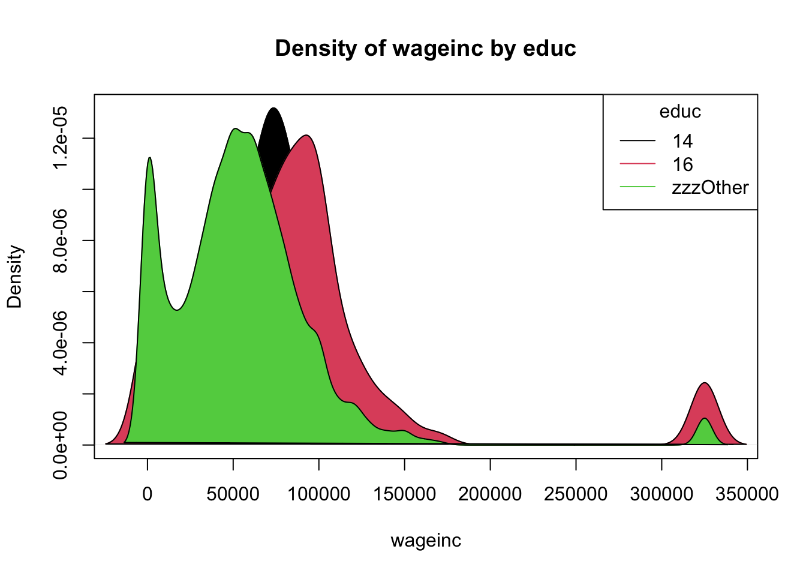

1 Introduction and Motivating Examples
To set the stage, consider the following:
1.1 UC Berkeley discrimination claims
UC Berkeley was accused of discriminating against female applicants for graduate school, and indeed the overall acceptance rate for women was lower than that for men. This seemed odd, given Berkeley’s liberal reputation.
However, upon breaking the data down according to the program students were applying to, it was found that in every department, the female acceptance rate within that department was either higher than the male rate or of similar level. The problem: women were applying to more selective programs, causing their overall rate to below that of men.
This data is included in R, as the built-in dataset UCBAdmissions.
1.2 US Census data
The svcensus dataset is a subset of US census data from back in 2000, focusing on six engineering occupations. The question at hand is whether there is a gender pay gap. Again, the overall pay for men is higher, by about 25%. But what if we break things down by occupation? Though it does turn out that some occupations pay more than others, and that men and women are not distributed evenly among the occupations, there still is a gender pay gap, of about 16%.
Included here in the dsld package.
1.3 Commonality
In both examples, we have an outcome variable Y of interest\(\textemdash\)acceptance rate and wage income\(\textemdash\)and a sensitive variable S, which was gender in both examples. But in both cases, were are concerned that merely comparing mean Y for each gender was an oversimplication, due to a possible confounder C\(\textemdash\)department in the first example, occupation in the second\(\textemdash\) that is related to both variables. Failure to take confounders (there can be more than one, and usually are so) into account can lead to spurious “relations” between S and Y.
As noted earlier, this book avoids technical definitions, keeping to the intuitive, including our notion here of a confounder. Actually, a fully precise definition is rather problematic.
Confounder adjustment analysis
So, in general, we wish to estimate the impact of a sensitive variable S on an outcome variable Y, but accounting for confounders C. Let’s call such analysis “confounder adjustment.”
The above discussion summarizes the goal of Part I of this book. Now contrast the above examples with a different kind, which will concern Part II:
1.4 COMPAS recidivism data
COMPAS is a commercial machine learning software tool for aiding judges in sentencing defendants convicted of a crime. The tool’s main function is to predict recidivism by a defendant. But a 2016 Pro Publica investigation found that the tool to be racially biased; African-American defendants tended to be given harsher ratings\(\textemdash\)i.e. higher estimated probabilities of recidivism\(\textemdash\)than similarly situated white defendants.
Northpointe, the firm that developed COMPAS, rejects the Pro Publica analysis, and we are not supporting either side here.
But if the COMPAS tool were in fact biased, how could the analysis be fixed?
Note that both Pro Publica’s analysis and that of Northpointe used methodology like that presented in this book.
A key point is that any remedy must not only avoid using race directly, but must also minimize the impact of variables O that are separate from race but still correlated with it, known as proxies. If, say, educational attainment is correlated with race, the inclusion of educational in our analysis will mean that race is still playing a role in our analysis after all.
Fair ML analysis
Thus our goal is to predict the outcome variable Y, without using the sensitive variable S, while making only limited use of the proxy variables O.
1.5 Summary: the two kinds of discrimination analysis covered here
Note the difference between accounting for confounders on the one hand, and fair ML on the other. Here is a side-by-side comparison:
| aspect | confounder adjustment | fair ML |
|---|---|---|
| goal | estimate an effect | predict an outcome |
| harm | comes from society | comes from an algorithm |
| side info | adjust for confounders | limit impact of proxies |
Part I, on confounder adjustment, focuses on discrimination examples but is applicable to confounder adjustment applications in general. Part II, on fair ML, is more specific to discrimination settings.
1.6 Summary of symbols
The symbol X will at first denote all the the variables other than Y and S. The general terminology is that Y is variously called the outcome variable, target variable or dependent variable; the X variables are known collectively as covariates, features or independent variables.
Among the variables in X, we will separate out some to play the role of C (Part I) or O (Part II), after which X will refer to all variables other than Y, S, C and O.
In terms of the above examples, here are the roles of the variables:
| example | Y | C | S | O |
|---|---|---|---|---|
| UCB admits | acceptance | department | gender | - |
| Census | wage | e.g. occupation | gender | - |
| COMPAS | recidivate | - | race | e.g. education |
1.7 A word before getting started
As noted, the book consists of two main topics:
Part I, adjusting for confounders
Part II, fair ML
In each case, we present explanations of the relevant concepts, so that this is a general tutorial on methodology for analysis of discrimination, and show the details of using our dsld package to make use of that methodology.
So, let’s get started. One key point first, though:
Notes on modeling, the role of the software, etc.
This book makes use of the dsld software, but is definitely not a user manual for that package. Instead, it is a guide to the statistical principles, with the software playing a supporting role.
Any statistical model is approximate. And virtually any relation of interest in practice is nonzero. Modern statistical thinking places reduced emphasis on significance tests and p-values, and asks instead whether A has an effect on B that is substantial enough to be of interest.
A related point is that, unlike some readers may have experienced in some statistics courses, real-world statistical analysis is not conducted in a formulaic, “Step 1, Step 2,…” manner. Instead, decisions on say, which model to use, must be made by you, the analyst, based on your overall assessment of the available information. The software cannot make your decisions for you.
The pioneering statistician George Box famously said, “All models are wrong, but some are useful.”